Manual do usuário: WolfxRacing Overlay para Le Mans Ultimate
Versão do overlay neste pacote: LMU 1.2.0 (estilos Glass Fumê e Sport + gráfico de pedais, Luz ABS, Luz TC, Retorno à pista e Estratégia de pneus). Os prints foram gerados no modo demonstração (dados simulados); as fontes e as medidas podem variar um pouco no seu Windows.
Sumário
- O que é · 2. Instalação · 3. Configurar o jogo · 4. Uso diário · 5. As 23 janelas · 6. Como ler os números · 7. Dash e Stream Deck · 8. Solução de problemas · 9. Atualizar · 10. Limites
1. O que é
23 janelas independentes e transparentes, sempre por cima do jogo, que podem ser movidas, redimensionadas e ligadas/desligadas pelo menu do ícone azul "LM" perto do relógio do Windows. Tudo roda localmente; nenhum dado seu é enviado para a internet.
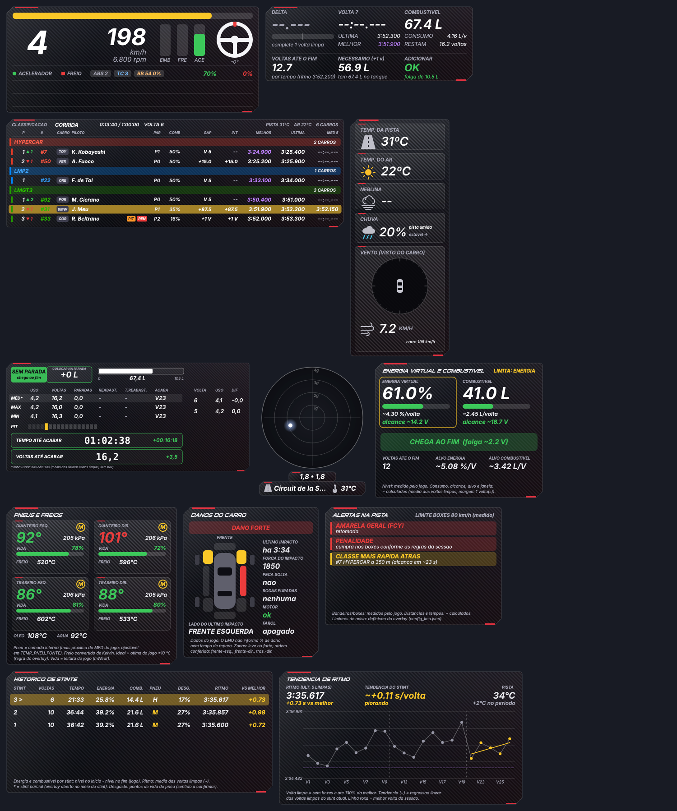
2. Instalação (uma única vez)
- Python 3.12. Instale o Python Install Manager em python.org/downloads.
- Extraia o
.zip dentro de C:\WolfxRacing (o zip já cria a pasta wolfxracing-overlay-lmu; o resultado é C:\WolfxRacing\wolfxracing-overlay-lmu). Outra pasta também funciona, mas veja o aviso do Stream Deck em STREAMDECK.md.
- Dê duplo clique em
overlay\instalar_lmu.bat. Ele prepara o Python 3.12 e instala PySide6-Essentials. O LMU não usa pyirsdk.
- Teste sem o jogo:
overlay\testar_demo_lmu.bat (dados simulados). Procure o ícone azul "LM" perto do relógio (seta ^).
Instalação manual (alternativa): py -3.12 -m pip install PySide6-Essentials.
3. Configurar o Le Mans Ultimate (obrigatório)
- No LMU: Settings > Gameplay > Enable Plugins = LIGADO (o overlay lê a memória compartilhada do jogo; não precisa instalar plugin nem DLL no Windows). Reinicie o jogo depois.
- Vídeo em Window ou Borderless. Em Fullscreen (tela cheia exclusiva) o Windows esconde qualquer overlay: não é defeito do programa. Reinicie o jogo depois de trocar.
- O overlay pode ser aberto antes ou depois do jogo. Sem sessão ele mostra "Aguardando o Le Mans Ultimate..." (jogo fechado, sem sessão ou Enable Plugins desligado).
4. Uso diário
- Abra
overlay\iniciar_overlay_lmu.bat.
- Posicionar: clique com o botão direito no ícone azul "LM" e desmarque "Travar posição". Arraste cada janela (contorno amarelo = modo mover). Ao terminar, marque "Travar posição": as janelas aparecem sozinhas ao sentar no carro e somem nos menus.
- Redimensionar: arraste as bordas/cantos ou use Ctrl + roda do mouse. A classificação é mais larga que as demais (~846x240 em 100%): ajuste na primeira vez.
- Primeira execução: o layout inicial vem do layout padrão e depois é gravado em
config_lmu.json (independente do iRacing, se você também usa o overlay dele).
- Visual: Visual moderno, Estilo Glass Fumê (vidro escuro translúcido, padrão), Estilo Sport (itálico, cantos cortados, detalhes vermelhos) e Transparência do fundo. Desmarcar Visual moderno volta ao clássico.
- Manter o overlay por cima do jogo: reafirma "sempre no topo" 10 vezes por segundo e na hora em que o foco muda.
- Diagnóstico:
overlay\diagnostico_lmu.bat (com o jogo aberto e no carro) grava diagnostico_lmu.txt com o que o overlay enxerga do jogo; anexe-o em Issues.
- Fechar: Sair no menu da bandeja,
Alt+Shift+F20 (Stream Deck) ou, se travar, overlay\fechar_overlay_lmu.bat.
Estilos visuais
Os dois estilos usam a tipografia esportiva (itálico; títulos em Sui Generis, se o SimHub estiver instalado). Glass Fumê e Sport não se combinam: ao marcar um, o outro desmarca. A Transparência do fundo vale para os dois (no Glass Fumê, valores entre 60% e 80% deixam o vidro mais evidente). O vidro é simulado com transparência e reflexos; o overlay não borra o que está atrás da janela.
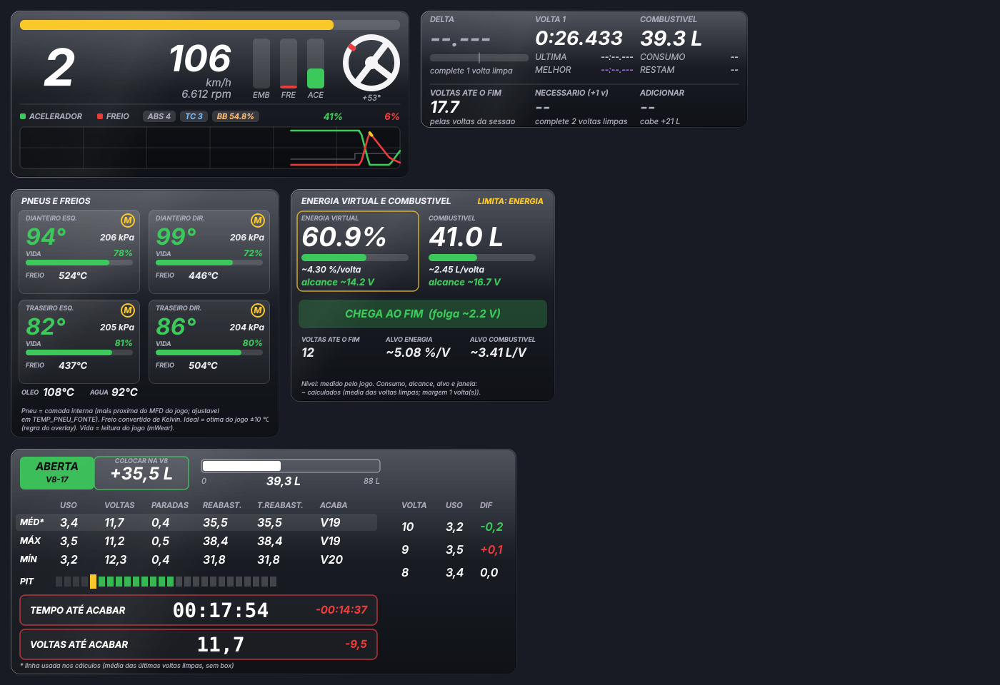
5. As janelas
1. Telemetria
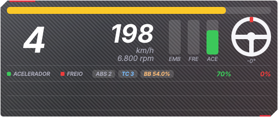
Marcha, velocidade, RPM, pedais, volante, TC, ABS, balanço de freio e gráfico de acelerador/freio (novo na 1.2.0: rola por tempo, de 5 a 30 s, com degraus da marcha, marca amarela do ABS no freio e marca azul do TC no acelerador).

- Ajustes em bandeja > Telemetria: tempo do gráfico de pedais, degraus das marchas, marca do ABS e marca do TC. As marcas de ABS e TC vêm do jogo, não são estimativa.
- Mesmo visual e posição das janelas do overlay de iRacing.
Layout em barra (novo na 1.4.1): no menu da bandeja, marque "Layout em barra horizontal (na telemetria)" para trocar o painel por uma barra de uma linha só (620 × 88 px, bem compacta): volante, marcha, velocidade, pedais e gráfico lado a lado. Embreagem em azul, freio em laranja e acelerador em verde, com o valor de 0 a 100 embaixo de cada pedal (colunas finas). Desmarque o gráfico e a barra encolhe para 292 px. Desmarcando o layout, volta o painel de sempre.
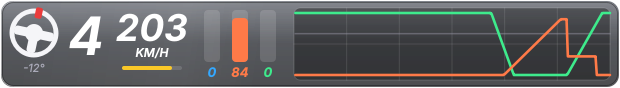
2. Voltas (delta)
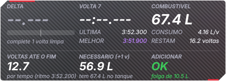
Delta, tempos atual / última / melhor e cálculo de combustível.
- Em prova limitada pela energia virtual, olhe a janela Energia: esta janela calcula só pelos litros.
3. Classificação detalhada
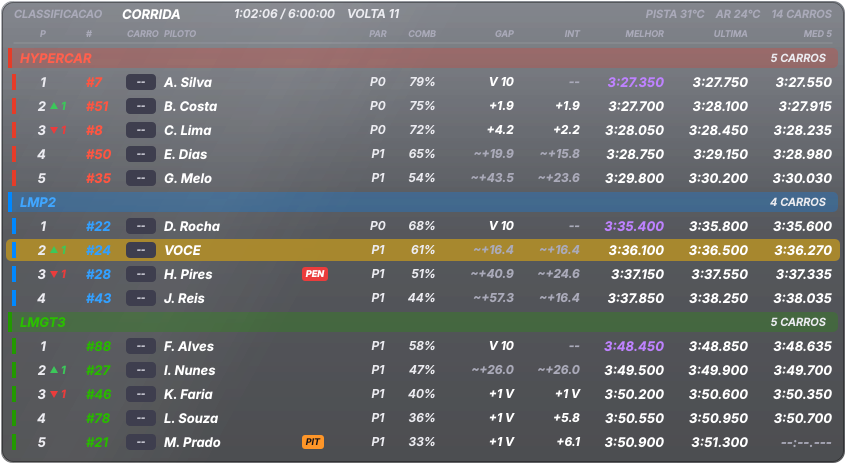
Agrupada por Hypercar / LMP2 / LMGT3, com posição na classe, setas de posições ganhas/perdidas, número, marca, piloto, selos PIT/PEN/FIM/DNF/DSQ, paradas, combustível %, GAP, INT, melhor, última e média das últimas 5.
- GAP/INT em branco = medido pelo jogo; cinza com "~" = estimado pela posição na pista (há carro de outra classe entre os dois).
- Melhor volta em roxo = a melhor da classe. MED 5 ignora volta de largada, volta com box e volta muito lenta.
4. Clima
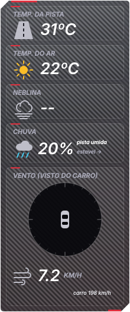
Temperatura da pista e do ar, chuva (com tendência), umidade da pista e vento.
- O LMU não informa o vento nem a neblina na memória compartilhada: mostram "--" (nada é inventado).
5. Combustível e pit
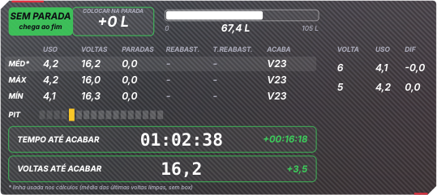
Medidor e calculadora: janela de pit, litros a colocar, autonomia e consumo.
- Calcula só pelos litros; para energia virtual, use a janela Energia.
6. Força G
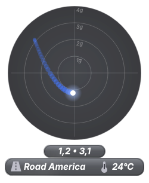
Círculo de G lateral e longitudinal com rastro, G atual e pico.
7. Energia virtual e combustível
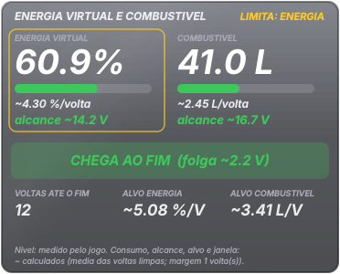
Energia virtual e combustível lado a lado, com barra, alcance (voltas) e destaque do recurso que limita; situação ("CHEGA AO FIM", "1 PARADA NECESSÁRIA..."), alvo de consumo por volta e voltas até o fim.
- Níveis são medidos pelo jogo; consumo, alcance, alvo e janela são calculados (marcados com "~").
8. Pneus e freios
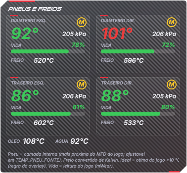
Quatro cartões com temperatura, pressão, vida (%) e composto (S macio, M médio, H duro, W chuva), temperatura do freio, óleo e água.
- Verde = dentro da faixa ideal do jogo (±10 °C); azul = frio; vermelho = quente.
- A temperatura do pneu é a camada interna (mais próxima do MFD do jogo). Vida "--" = o jogo não entregou leitura para aquela roda.
9. Danos do carro
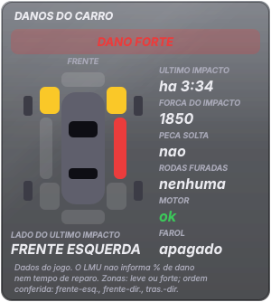
Carro visto de cima com 8 zonas (cinza = nenhum, amarelo = leve, vermelho = forte), rodas furadas/soltas, peça solta, motor (ok / superaquecendo / parado), farol, lado e força do último impacto.
- O LMU não informa % de dano nem tempo de reparo.
10. Alertas na pista
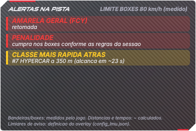
Até 6 avisos por gravidade (vermelho = perigo, amarelo = atenção, azul = informação): corrida parada, amarela geral (FCY), amarela local, bandeira azul, classe mais rápida atrás, carro lento/parado à frente, saída dos boxes, limitador, penalidade, motor superaquecendo, motor parado, pneu furado, peça solta e energia/combustível na reserva.
- Limiares (distâncias de aviso etc.) são definições do overlay, editáveis em
config_lmu.json.
11. Histórico de stints
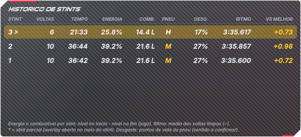
Por stint: voltas, tempo, energia e combustível gastos, pneu, desgaste, ritmo e diferença para a melhor volta.
- "*" = stint parcial (overlay aberto no meio do stint).
12. Tendência de ritmo
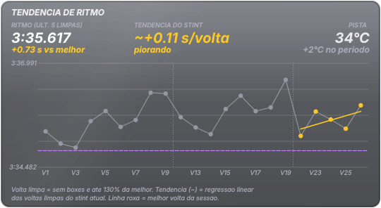
Gráfico das voltas limpas (stint atual em amarelo, reta de tendência, melhor volta em roxo), ritmo das últimas 5, tendência em s/volta e temperatura da pista.
- Volta limpa = sem box e dentro de 130% da melhor.
13. Luz do ABS
Um ícone solto, sem painel e sem texto, que acende enquanto o ABS está atuando e apaga quando ele para. No LMU o jogo informa quando o ABS atua (não é estimativa). Uma piscada curta no ponto de freada é o ABS trabalhando bem; acesa até o meio da curva, a freada passou do ponto.
- Cor: dourado (padrão), vermelho ou branco. Como pisca: no ritmo do ABS (padrão), piscada suave ou luz fixa.
- Quando não atua, a janela é totalmente transparente; para vê-la apagada marque deixar visível e apagada quando não atua ou use Testar a Luz do ABS (5 s) na bandeja (útil para posicionar).
- Carros sem ABS não acendem a luz (comportamento esperado).
14. Luz do TC (controle de tração atuando)
Ícone solto que acende quando o controle de tração está cortando potência (aviso do próprio jogo, mTCActive). No iRacing a mesma janela é uma estimativa; no LMU é dado do jogo.
- Mesmas opções de cor, piscada, "visível e apagada" e teste de 5 s da Luz do ABS (cor padrão azul).
- Acender muito = acelerador entrando cedo demais, ou o ajuste do TC do carro baixo demais para o piso.
15. Retorno à pista (PARE / CEDA / LIVRE)
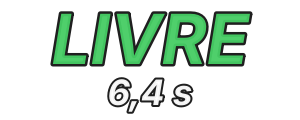
Aparece quando você está parado na pista ou com as quatro rodas fora dela e mostra se pode voltar: PARE (vermelho), CEDA (laranja) ou LIVRE (verde), com os segundos até o carro mais próximo que vem atrás chegar até você. Some sozinho depois que você volta a andar.
- A velocidade de cada carro é medida ao vivo (avanço na pista); considera qualquer carro atrás de você, inclusive de outra classe. O LMU não informa a superfície dos outros carros: todos contam como "na pista".
- Não avisa nos boxes, no grid nem na volta de apresentação.
- Limites ajustáveis em bandeja > Retorno: vermelho abaixo de 1,5 s (padrão) e laranja abaixo de 3,5 s. Deixar sempre visível enquanto piloto e Testar o aviso (9 s) ajudam a posicionar.
16. Estratégia de pneus (chuva x seco)
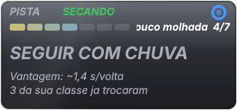
Cartão que compara a umidade da pista e a chuva com o pneu montado e diz SEGUIR, PREPARE-SE (com minutos estimados quando a pista está secando) ou TROCAR. Antes da largada (e na garagem da classificação) mostra qual pneu largar.
- Usa a escala "pista molhada" de 1 a 7 do overlay (apoio visual, não medida oficial) e o composto do seu carro.
- Limites no LMU: o jogo não informa o pneu dos outros carros nem o pedido feito nos boxes, então não há "vantagem em s/volta" nem contagem de rivais (isso existe só no iRacing). A recomendação é pela pista e pelo seu pneu.
- Não mexe no carro nem pede pneu: só informa.
17. Curvas (velocidade mínima por curva) — novo na 1.4.0
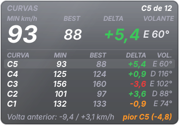
Mostra, para cada curva da pista, a menor velocidade que você fez e compara com a sua melhor passagem por ela. É a janela para descobrir onde a volta está sendo perdida: em qual curva, e quanto.
- Cartão grande (última curva concluída): MIN (menor velocidade nessa curva, em km/h), BEST (a maior velocidade mínima que você já fez nessa curva em voltas válidas), DELTA (MIN − BEST das voltas anteriores) e VOLANTE (graus do volante no ponto da velocidade mínima; E = esquerda, D = direita).
- DELTA: verde = mais rápido que a sua melhor passagem; branco = praticamente igual (menos de 0,5 km/h); laranja = perdeu um pouco; vermelho = perdeu 3 km/h ou mais.
- Linhas: as últimas 5 curvas desta volta, a mais recente em cima. Rodapé: o que a volta anterior perdeu e ganhou no total e a pior curva.
- Como as curvas são achadas: o overlay não conhece o traçado. Ele guarda a menor velocidade em cada trecho da pista nas suas voltas e marca como curva cada queda de velocidade seguida de recuperação (numeradas C1, C2... a partir da linha de chegada). A primeira volta válida cria o mapa; as três primeiras o refinam e depois ele congela. Tudo vem do carro (velocidade, volante, posição na volta); nada é estimado, mas o mapa de curvas é uma inferência: curvas muito suaves (que quase não reduzem a velocidade) não aparecem, e uma chicane rápida pode virar uma curva só.
- Volta válida: sem passar pelos boxes, sem sair da pista ou com as quatro rodas na grama, sem parar, com a volta quase inteira medida e sem ser muito mais lenta que a melhor. Voltas inválidas não entram no BEST.
- Valores só da sessão: o aprendizado e o BEST valem para a sessão atual; ao mudar de sessão ou pista tudo recomeça. Use "Curvas: reiniciar o aprendizado desta pista" na bandeja para zerar na mão.
- Fonte: o menu da bandeja liga/desliga a janela; não há atalho de Stream Deck para ela nesta versão.
Janelas automáticas da 1.5.0: Bandeiras, Tráfego, Minimapa e Auxiliar
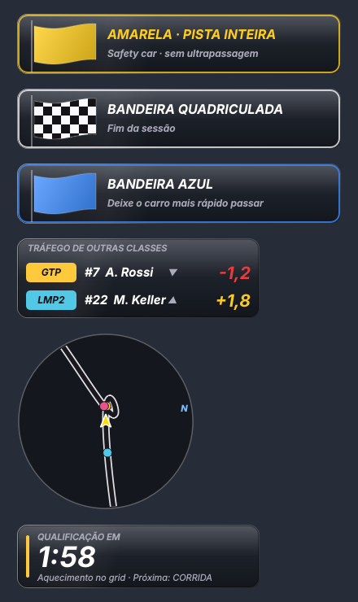
| Janela |
Quando aparece |
O que mostra |
| Bandeiras |
só com bandeira |
verde (6 s), amarela, amarela de pista inteira, azul, branca, quadriculada, preta/desclassificado, vermelha |
| Tráfego |
só com carro de outra classe a até ~6 s |
classe, #número, piloto e diferença em s (▼ atrás, ▲ à frente) |
| Minimapa |
sempre |
pista girando ao seu redor; carros na cor da classe; "N" = norte; alcance 150/260/400 m no menu |
| Auxiliar |
antes da largada e no fim |
etapa da sessão, contagem, duração; "também durante a sessão" mostra o tempo restante |
Destravadas (modo mover), as janelas automáticas mostram um exemplo para você posicionar. Os segundos do Tráfego são calculados (velocidade e distância na pista); o traçado do Minimapa é aprendido na primeira volta.
Central de configurações (1.6.0)
Duplo clique no ícone da bandeja (ou "Abrir configurações…"):
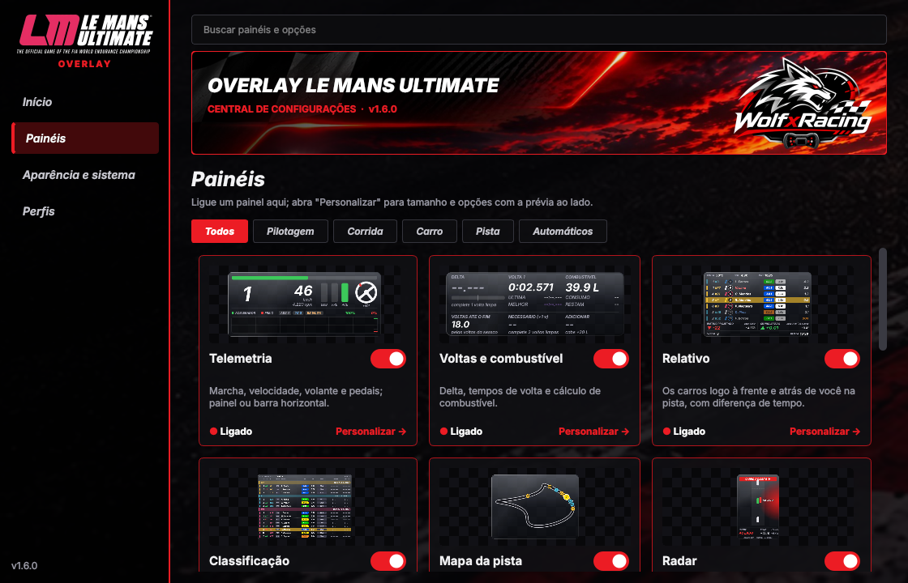
- Painéis: um cartão por janela com prévia, liga/desliga e "Personalizar"; busca e filtros por categoria.
- Personalizar: tamanho, opções do painel e prévia ao vivo.
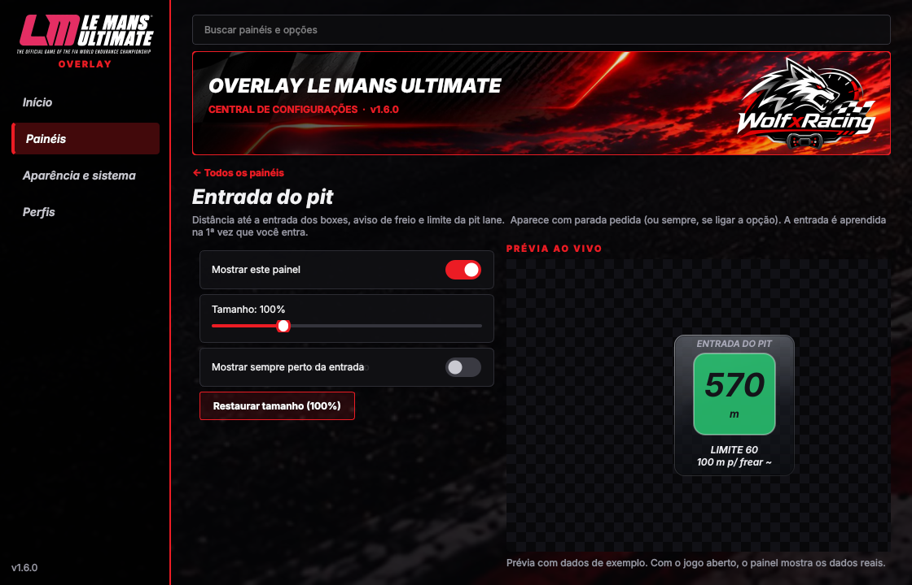
- Aparência e sistema: opacidade, vidro, travar posição, economia de CPU, prioridade, atalhos.
O menu da bandeja ficou curto; todas as opções antigas estão em "Todas as opções (avançado)".
Último contato e Entrada do pit (1.6.0)
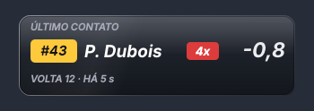
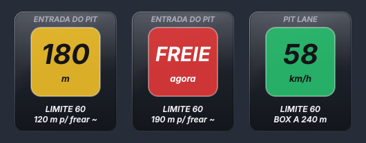
- Último contato: aparece depois que você toca em um carro; mostra o piloto, a volta, há quanto tempo e a diferença atual (− atrás, + à frente).
- Entrada do pit: verde → amarelo → vermelho (FREIE) conforme a distância de frenagem até o limite; na pit lane mostra a velocidade contra o limite e a distância até o box. A frenagem usa 1,2 g: é uma estimativa. A entrada da pista é aprendida na primeira vez que você entra nos boxes.
6. Como ler os números: medido, calculado, estimado
- Medido pelo jogo (sem marca): ABS e TC atuando, níveis (energia virtual, combustível, desgaste, temperaturas, pressão), composto, zonas de dano, bandeiras, boxes, penalidades.
- "~" = calculado pelo overlay: consumo por volta, alcance, janela de pit, alvo de consumo, ritmo, tendência, distâncias e tempos entre carros, limite dos boxes (o jogo não informa; o overlay anota a velocidade com o limitador ligado nos boxes e só mostra depois da 1ª passagem).
- O LMU não informa: o pneu dos outros carros e o pedido de pneu nos boxes (por isso a Estratégia não tem vantagem em s/volta), a superfície dos outros carros (Retorno), % de dano, tempo de reparo, tempo de parada planejado, previsão do tempo, país/iRating dos pilotos nem pneus/dano dos outros carros. Essas informações não existem no overlay (nada é inventado). Vento e neblina dependem de o jogo preencher o dado; sem ele aparece "--".
- A vida do pneu vem de
mWear (100% = novo). Quando o jogo entrega exatamente 0,0 numa roda, o overlay trata como sem leitura e mostra "--" em vez de "0%".
- "Pista molhada" (1 a 7) e "céu" são escalas do overlay a partir de números do jogo: apoio visual, não medida oficial.
7. Dash e Stream Deck
- Dash MagicDash 4 Glass Fumê ou Sport (3 telas): veja DASH.md.
- Perfil de Stream Deck XL (janelas, controles, iniciar/fechar, pasta Suporte): veja STREAMDECK.md.
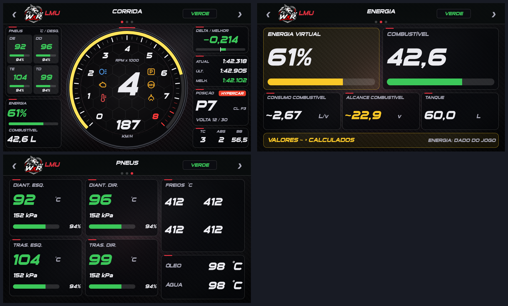
8. Solução de problemas
| Sintoma |
O que fazer |
| Janelas não aparecem |
O jogo está em Window/Borderless (e não Fullscreen)? Enable Plugins está ligado? Rode diagnostico_lmu.bat. |
| "Aguardando o Le Mans Ultimate..." |
O overlay não achou a memória do jogo: jogo fechado, sem sessão ou Enable Plugins desligado. |
| Estado "incompatível" no log |
O jogo foi atualizado e mudou o formato da memória. O overlay não mostra dados errados: abra uma Issue com o diagnóstico. |
| Amarela local acesa o tempo todo |
Versões antigas tratavam o valor 11 como amarela; a versão atual só aceita 1 (confirmado em jogo real). |
| Vento/neblina "--" |
O LMU não informa esses dados nesta estrutura. |
| Numero do carro em branco |
O número sai do nome do veículo ("... #31"); mods fora do padrão podem ficar em branco. |
| Um atalho do Stream Deck não funciona |
Outro programa pode estar usando a combinação; veja overlay_log_lmu.txt. |
| Valor estranho |
Anote a janela e a situação e abra uma Issue com diagnostico_lmu.txt e overlay_log_lmu.txt. |
9. Atualizar para uma versão nova
- Feche o overlay (Sair na bandeja).
- Baixe o novo
.zip e copie por cima da pasta atual (o config*.json, recordes, mapas e logs ficam e continuam valendo, pois não vêm no pacote).
- Leia o CHANGELOG para ver o que mudou. Reabra o overlay.
10. Limites conhecidos
- O pacote foi validado parcialmente no jogo real: leitura de dados, energia, pneus, delta, gaps, danos e alertas funcionaram; vento e neblina não são fornecidos pelo jogo. Veja
overlay/ROTEIRO_VALIDACAO_LMU.txt para validar com o jogo.
- Tela cheia exclusiva (Fullscreen) esconde qualquer overlay (limitação do Windows).
- Se o LMU for atualizado e mudar o formato da memória compartilhada, o overlay detecta e se recusa a mostrar dados errados até ser atualizado.
- O numero e a marca do carro saem do nome do veículo; mods fora do padrão podem ficar sem número.
Mais detalhes técnicos de cada recurso: referencia/GUIA_ORIGINAL.txt (guia completo escrito durante o desenvolvimento).